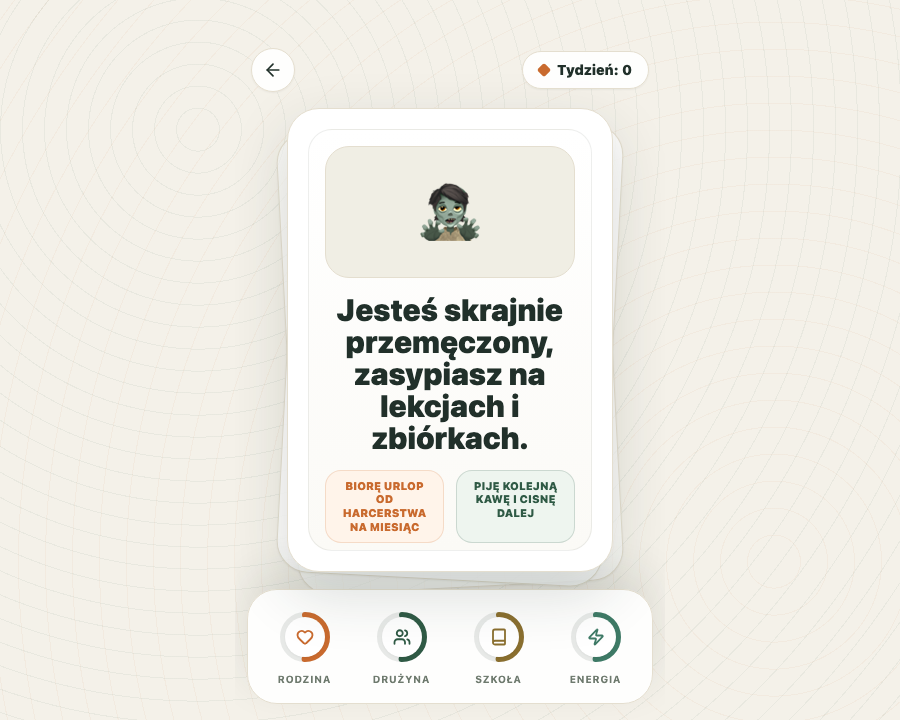

Rodzina
Relacje, obowiązki domowe, obecność i odpoczynek poza harcerstwem.
1. Gra
Uczestnik dostaje kolejne sytuacje i wybiera jedną z dwóch reakcji. Każda decyzja wpływa na cztery obszary: rodzinę, drużynę, szkołę i energię. Przed startem wybiera wersję pytań dla harcerzy albo harcerek.

Gra nie szuka jednej poprawnej odpowiedzi. Jej celem jest pokazanie napięć, które pojawiają się między służbą, szkołą, odpoczynkiem i relacjami. Po kilku rundach warto zatrzymać grupę i zapytać, które wybory były intuicyjne, a które wymagały kompromisu.
Relacje, obowiązki domowe, obecność i odpoczynek poza harcerstwem.
Służba, zbiórki, kadra, przygotowania i odpowiedzialność instruktorska.
Nauka, terminy, zaliczenia i zwykła codzienna organizacja pracy.
wsparcie.